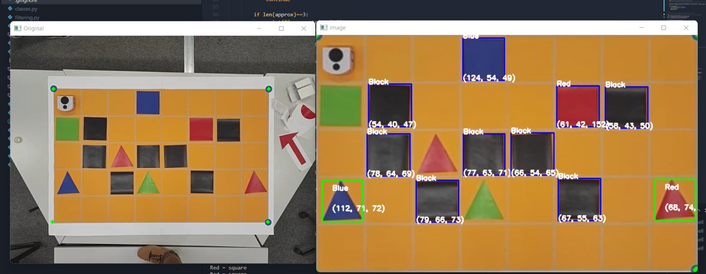

Mobile robotics project

For the Basics of mobile robotics course, my team had to make a small Thymio robot reach a goal on its own, while avoiding obstacles. The project brings together every part of mobile robotics: computer vision, global path planning, filtering for localisation and local obstacle avoidance. We designed and printed our own arena, an orange grid with black obstacles and colored shapes as landmarks.
A camera above the arena looks at the scene. My vision program, written with OpenCV, corrects the perspective using the four corners of the map, then detects every obstacle, shape and color as well as the position and orientation of the robot. From this map, the program builds a visibility graph and computes the shortest path to the goal. While the robot moves, a Kalman filter merges the camera measurements with the wheel odometry, so the robot still knows where it is when the camera is hidden. If an unexpected obstacle appears, the proximity sensors take over to avoid it before the robot resumes its path.

Camera view
What the camera sees: the arena, the obstacles and the Thymio

Vision
Perspective correction and detection of every shape and color on the map

Map
The map as the program understands it, with obstacles, landmarks and the robot

Path planning
Visibility graph between the obstacles, used to find the shortest path